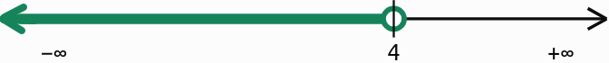

Desigualdades
¿Qué es una desigualdad?
Una desigualdad es una expresión matemática que indica que dos cantidades no son iguales y que una es mayor o menor que la otra.
Para expresar desigualdades utilizamos los siguientes signos:
| Signo | Significado | Ejemplo |
| \(<\) | Menor que | \(3<7\) |
| \(>\) | Mayor que | \(9>4\) |
| \(\leq\) | Menor o igual que | \(x\leq 5\) |
| \(\geq\) | Mayor o igual que | \(x\geq 2\) |
| \(\neq\) | Distinto de | \(x\neq 0\) |
Los signos \(\leq\) y \(\geq\) incluyen la posibilidad de que las dos cantidades sean iguales.
Por ejemplo:
- \(x<5\): \(x\) es menor que 5, pero no puede ser 5.
- \(x\leq 5\): \(x\) puede ser menor que 5 o igual a 5.
- \(x\geq 10\): \(x\) puede ser 10 o cualquier número mayor.
Las desigualdades en la vida cotidiana
Las desigualdades permiten expresar condiciones que aparecen en muchas situaciones reales.
Ejemplo 1. Edad mínima
Para subir a una atracción es necesario tener al menos 12 años.
Si \(x\) representa la edad, escribimos:
\( x\geq 12 \)
Ejemplo 2. Capacidad máxima
En un ascensor pueden viajar como máximo 6 personas.
Si \(x\) representa el número de personas, escribimos:
\(x\leq 6\)
Ejemplo 3. Presupuesto
Disponemos de 25 € para comprar material escolar.
Si \(x\) representa el precio total de la compra, la condición es:
\(x\leq 25\)
Observa que, en los problemas reales, algunas variables solo pueden tomar valores concretos. Por ejemplo, el número de personas debe ser un número entero, mientras que el precio puede incluir decimales.
Propiedades de las desigualdades
Podemos realizar operaciones en una desigualdad para obtener otra equivalente, es decir, otra que tenga las mismas soluciones.
Sumar o restar la misma cantidad
Si sumamos o restamos el mismo número en los dos miembros, el sentido de la desigualdad se mantiene.
Ejemplo:
\( 3<7\)
Sumamos 2 en ambos miembros:
\(3+2<7+2\)
\(5<9\)
Multiplicar o dividir por un número positivo
Si multiplicamos o dividimos los dos miembros por un número positivo, el sentido de la desigualdad no cambia.
Ejemplo:
\(2<6\)
Dividimos entre 2:
\( 1<3 \)
Multiplicar o dividir por un número negativo
Si multiplicamos o dividimos los dos miembros por un número negativo, tenemos que cambiar el sentido de la desigualdad.
Ejemplo:
\( 2<6\)
Multiplicamos por \(-1\):
\(-2>-6\)
La desigualdad cambia de sentido porque los números negativos se ordenan al revés que los positivos.
Este es uno de los aspectos más importantes del tema y conviene recordarlo durante toda la resolución de inecuaciones.
Regla para recordar:
- \(<\) cambia a \(>\).
- \(>\) cambia a \(<\).
- \(\leq\) cambia a \(\geq\).
- \(\geq\) cambia a \(\leq\).
Es decir, el signo cambia de sentido, pero conserva o no la igualdad según la desigualdad original.
Inecuaciones
¿Qué es una inecuación?
Una inecuación es una desigualdad en la que aparece una o más incógnitas, normalmente representadas por la letra \(x\).
Por ejemplo:
\( 2x+3<11 \)
\( x^2-4\geq 0 \)
Resolver una inecuación consiste en encontrar todos los valores de la incógnita que hacen que la desigualdad sea verdadera.
A diferencia de una ecuación, que normalmente busca valores que producen una igualdad, una inecuación puede tener muchas soluciones.
Ejemplo:
\(x+2<6 \)
Restamos 2 en ambos miembros:
\( x<4 \)
La solución está formada por todos los números menores que 4.
Por ejemplo, \(x=0\), \(x=2\) y \(x=3,5\) son soluciones, pero \(x=4\) no lo es.
¿Cómo se expresa la solución?
Las soluciones de una inecuación pueden expresarse de tres maneras.
- Mediante una desigualdad: \(x<4\).
- Mediante un intervalo: \(x\in(-\infty,4)\).
- Gráficamente: representando los números que cumplen la condición en la recta real.
Veamos ahora un ejemplo de representación gráfica o representación en la recta real:

\(x<4\)El círculo abierto indica que el 4 no está incluido. La parte coloreada representa todas las soluciones menores que 4.
En la representación de intervalos:
- El paréntesis \((\) o \()\) indica que el extremo no está incluido.
- El corchete \([\) o \(]\) indica que el extremo sí está incluido.
- Con \(+\infty\) y \(-\infty\) siempre se utilizan paréntesis.
Ejemplos:
- \( x<3 \quad\Longrightarrow\quad (-\infty,3) \)
- \( x\geq 3 \quad\Longrightarrow\quad [3,+\infty) \)
- \( 2\leq x<6 \quad\Longrightarrow\quad [2,6) \)
Propiedades de las desigualdades
Una desigualdad compara dos expresiones mediante los signos \(<\) (menor que), \(>\) (mayor que), \(\leq\) (menor o igual que) o \(\geq\) (mayor o igual que).
Para resolver desigualdades, también llamadas inecuaciones, utilizamos estas propiedades:
1. Sumar o restar el mismo número
Si sumamos o restamos el mismo número en los dos miembros, el sentido de la desigualdad no cambia.
Ejemplo:
\( x+3<8 \)
Restamos 3 en ambos miembros:
\( x<5 \)
2. Multiplicar o dividir por un número positivo
Si multiplicamos o dividimos los dos miembros por un número positivo, el sentido de la desigualdad se mantiene.
Ejemplo:
\( 2x<10 \)
Dividimos entre 2:
\( x<5 \)
3. Multiplicar o dividir por un número negativo
Si multiplicamos o dividimos los dos miembros por un número negativo, el sentido de la desigualdad se invierte.
Ejemplo:
\( -2x<10 \)
Dividimos entre \(-2\) e invertimos el signo:
\( x>-5 \)
Truco para recordar: si multiplicas o divides por un número negativo, cambia el sentido de la desigualdad.
4. Propiedad transitiva
Si un número es menor que un segundo número, y este es menor que un tercero, entonces el primero es menor que el tercero.
Ejemplo:
Si \(a<b\) y \(b<c\), entonces:
\( a<c \)
Por ejemplo, si \(3<5\) y \(5<8\), entonces \(3<8\).
Esta propiedad también se cumple con el signo \(>\).
Recuerda: si dos desigualdades tienen un término en común, podemos relacionar los otros dos términos, siempre que las desigualdades tengan el mismo sentido.